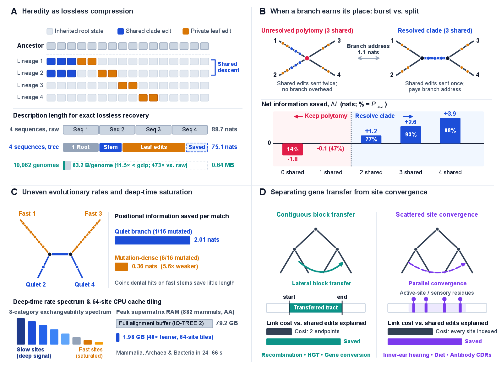
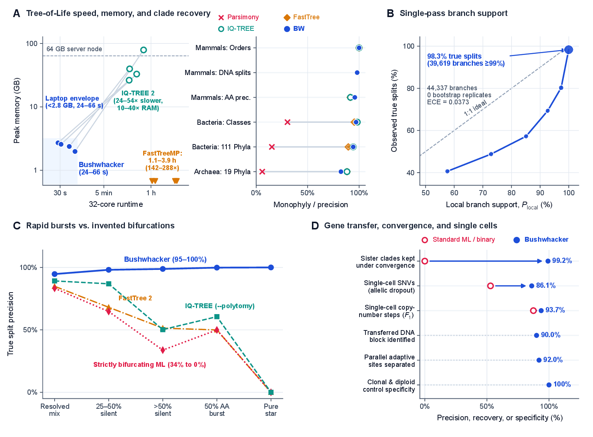
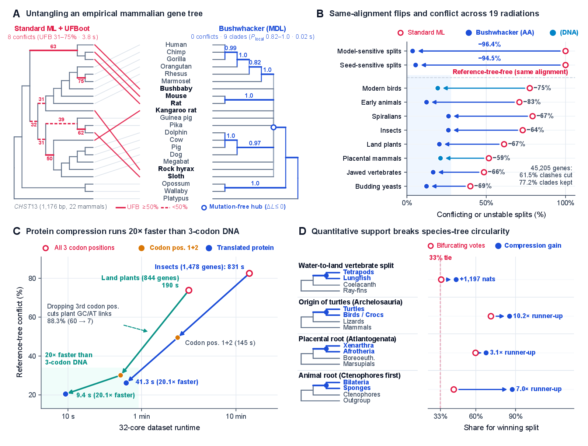
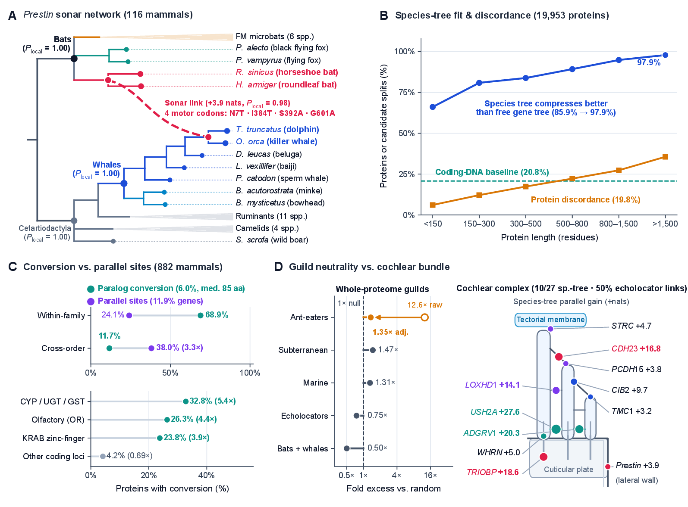
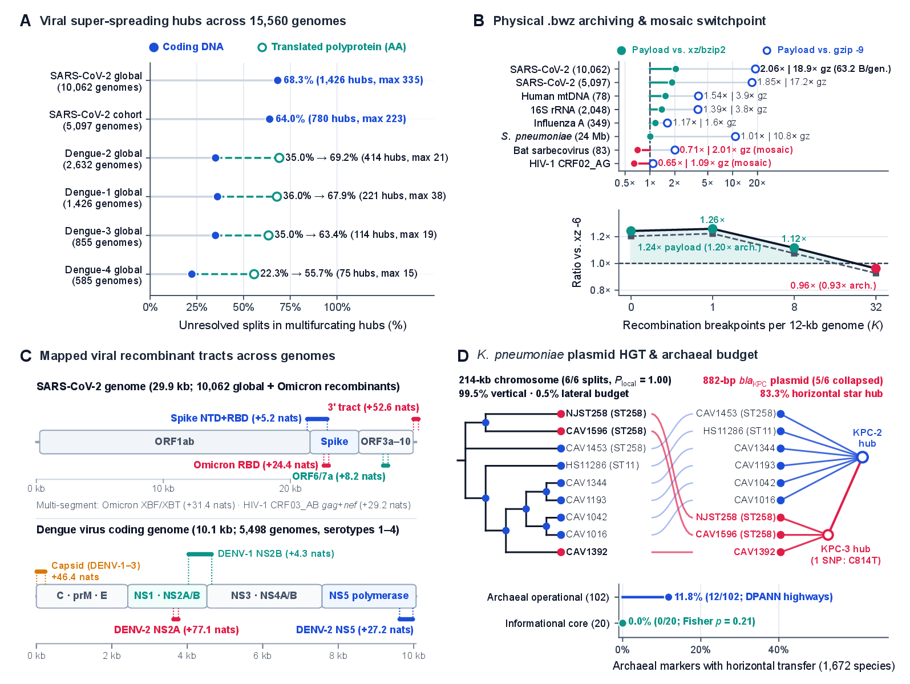
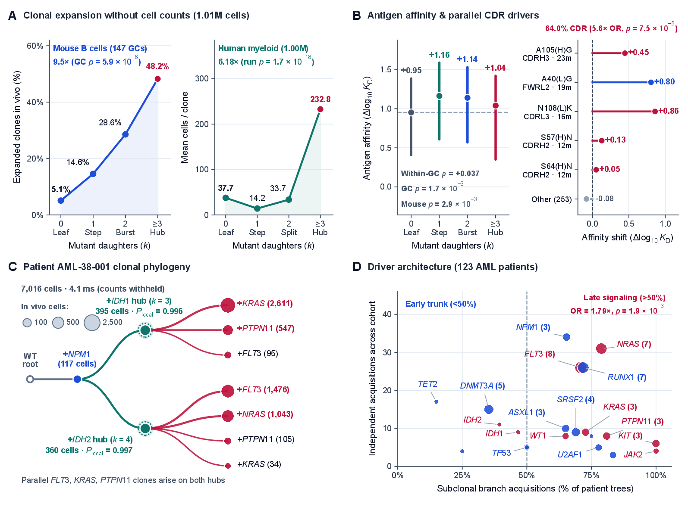

Evolutionary History From Genomes to Single Cells by Lossless Compression
Modern evolutionary genomics runs on fragmented pipelines. Inferring a phylogenetic graph typically requires concatenating or reconciling maximum-likelihood (ML) gene trees under fixed Markov rate matrices, executing hundreds of bootstrap replicates, heuristically collapsing weakly supported edges, and applying separate post-hoc scanners for recombination, horizontal gene transfer (HGT), adaptive convergence, or single-cell allelic dropout. In our new study, Evolutionary history from genomes to single cells by lossless compression, we replace this fragmented stack with a single Minimum Description Length (MDL) objective implemented in Bushwhacker—achieving 24–54× speedups in 10–40× less memory than ML on thousand-taxon supermatrices, zero-bootstrap calibrated support, native support for five biological data modalities, and principled non-tree graph inference up to a quantitatively measurable mosaic horizon.
Evaluates fixed 8-category rate models (GTR+CAT8 / LG08+CAT8) over 64-site L1/L2 cache tiles with deterministic -T 1..64 canonical reduction. Matches IQ-TREE 2 clade recovery across 882 mammals and 1,672 archaea in 10–40× less RAM (peak 1.98 GB vs. 79.2 GB) and 24–54× less runtime, while analytical local compression support Plocal ≥ 99% achieves 98.3% split precision across 44,337 ground-truth branches.
Unifies codon-phased DNA/RNA, --protein (20 AA + empirical Dayhoff/BLOSUM costs), --translate (64-codon translation to suppress saturation), --discrete multi-state somatic SNVs (2 ≤ K ≤ 32 with explicit ?/- dropout coding), and --ordered step-weighted zygosity/copy-number profiles (3 ≤ K ≤ 16; 0..11+ bins).
Unresolved radiations remain multifurcating hubs when internal branches fail to save structure bits (cutting ML burst false splits from 23–61 down to 0.00–0.18). Residual signals split via exact code lengths into contiguous INTERVAL recombination/conversion tracts versus scattered SPARSE convergent sites across 19,953 mammalian proteins and archaeal genomes.
Tree-guided arithmetic coding (.bwz) compresses 10,062 SARS-CoV-2 genomes to 63.2 B/genome (1.25× smaller than xz -6 archive; 2.06× smaller payload), while multi-donor mosaicism (sarbecoviruses 0.71×, HIV-1 CRF02_AG 0.65×) marks the regime where xz overtakes single-tree delta encoding. Blind single-cell trees predict 9.5× B-cell and 6.18× leukemia expansion.
Why Operational Phylogenetics Needs a Single Compression Currency
Every empirical inference pipeline faces three compounding bottlenecks: memory and compute walls on deep supermatrices, forced bifurcation bias during rapid radiations or plasmid sweeps, and model fragmentation when datasets move beyond aligned nucleotides to somatic single-nucleotide variants (SNVs) with allelic dropout, integer copy-number profiles, or reticulate evolution.
Classical probabilistic phylogenetics treats tree topology as free prior infrastructure: an algorithm proposes strictly bifurcating splits everywhere, optimizes continuous branch lengths and rate parameters under maximum likelihood, and delegates uncertainty to computationally expensive bootstrap resampling or downstream tree reconciliation. Conversely, parsimony counts raw character state changes uniformly without penalizing homoplasy on mutation-dense branches or charging structural complexity for the splits themselves.
Bushwhacker unifies these problems by treating an evolutionary graph G and its ancestral states as a two-part lossless program predicting the observed matrix X in natural information units (nats, 1 nat ≈ 1.44 bits; Figure 1):
L(X, G) = L(G) + L(X | G)
Here L(G) is the exact structural description cost of naming internal splits, polytomy hubs, and lateral links, while L(X | G) is the residual conditional code length of encoding all extant character differences given their immediate ancestor on G. An edge or lateral shunt is retained if and only if adding it yields a strictly positive compression saving ΔL = −Δ[L(G) + L(X | G)] > 0.

Positional Weights, Polytomy Calibration, and Fixed CAT8 Rate Coding
Two information-theoretic mechanisms give this single criterion both statistical calibration and ML-grade resistance to long-branch attraction:
- Self-calibrating split retention and local support (Plocal): Along a branch of sequence length L carrying mc derived substitutions, specifying a change via combinadic indexing costs wc = ln((L − mc) / (mc + 1)) ≈ −ln(pc / (1 − pc))—directly analogous to Felsenstein's log-odds weighting (exact worked derivation). Assigning one rare shared substitution across two sisters on a saturated branch vs. a low-divergence branch therefore produces a 5.6× differential compression credit on a
1/16vs.6/16branch. Subtracting structural wiring cost yields a positive or negative compression margin ΔL, whose logistic transform Plocal = 1 / (1 + e−ΔL) gives a direct, bootstrap-free split probability. - Cache-tiled 8-category rate variation with Fisher–Rissanen curvature penalties: For multi-taxon alignments, site-rate heterogeneity and biochemical exchangeability are incorporated directly into code lengths using fixed 8-category unit-mean Γ(1,1) octile models (
GTR+CAT8for nucleotides with N ≥ 4;LG08+CAT8for proteins with N ≥ 3) penalized by exact Fisher–Rissanen parametric complexity. Packing site vectors into L1/L2 cache-resident 64-site tiles combined with deterministic canonical reduction makes execution memory-light and bit-identical across-T 1through-T 64.
Scaling Benchmarks, Bootstrap-Free Calibration, and Five Data Modalities
Evaluated on a 32-core ARM64 server across deep phylogenomic supermatrices—882 mammals (DNA and amino acid), 1,672 archaea, and 1,000 bacteria—Bushwhacker resolves trees in 24–66 seconds using 1.98–2.71 GB peak RAM (well within a laptop memory envelope), compared to 26.37–79.15 GB and 24–54× longer runtimes for IQ-TREE 2 (40× lower peak RAM on 882-mammal amino acids: 1.98 GB vs. 79.2 GB) and 1.1–3.9 hours (142–288× slower) for FastTreeMP (Figure 2A). Clade recovery matches ML benchmarks (100% mammalian orders, 94.3% bacterial phyla, 0.5–2.5 percentage points overall difference) while cutting false mammalian splits in half (4.2% vs. 8.4% for IQ-TREE 2).

Across 37,020 ground-truth simulations (36,120 nucleotide/protein/coalescent replicates plus 800 lateral and somatic benchmarks), Bushwhacker sustains three operational guarantees (Figure 2B–D):
- Calibrated uncertainty without resampling: Across 44,337 simulated branches, high-confidence splits (Plocal ≥ 99%, comprising 39,619 branches) match true bipartitions 98.3% of the time (ECE = 0.0373; intermediate 50–99% bins recover 40.6–80.3% under the conservative single-edge collapse test).
- Polytomy integrity and gene-tree species reconciliation: During rapid bursts, Bushwhacker commits only 0.00–0.18 false splits per burst vs. 23–61 for forced bifurcations (>94% precision vs. 34% down to 0% for standard ML). Feeding contracted gene trees into
ASTRAL-IVimproves species-tree accuracy across both anomaly-zone simulations and 11,164 empirical loci. - Uniform encoding across five distinct evolutionary alphabets: Rather than re-engineering separate heuristics per assay, changing the conditional symbol-transition cost function inside the same Rust/SIMD kernel adapts compression to any discrete or ordered state space (Table 1).
| Modality & CLI Flag | State Space & Transition Coding | Primary Empirical Target & Advantage |
|---|---|---|
Nucleotides(default / --codon-phase) |
4 states (A,C,G,T) + automatic 3rd-codon position weighting + GTR+CAT8 |
Deep supermatrices & rapid radiations (882 mammals, 45,205 genes, 10,062 SARS-CoV-2) |
Proteins--protein |
20 amino acids + empirical Dayhoff/BLOSUM exchange costs + LG08+CAT8 |
Ancient divergences & adaptive convergence across 19,953 mammalian TOGA2 proteins & 1,672 archaea |
Codon Translation--translate |
64 sense/stop codons compressed in 20-state universal AA code | Suppresses silent substitution saturation; reduces spurious plant gene-tree shunts by 88.3% (60 → 7) |
Single-Cell SNVs--discrete |
Unordered 2 ≤ K ≤ 32 states (0=WT, 1=Mut, ?/-=dropout coded neutrally) |
Avoids artifactual dropout clustering (86.1% vs. ~53% binary ML); 1.01M immune & AML cells (4.1 ms vs. 471 s MCMC) |
Ordered Zygosity / CNA--ordered |
Ordered 3 ≤ K ≤ 16 steps (0=WT, 1=HET, 2=HOM or 0..11+ CNA bins) |
L1 step distance on CN-LOH (90.3% capture) & 500-kb ovarian/breast CNAs (F1 = 93.7%, 21.9–33.5× compression) |
Eliminating Phantom Conflicts Across 45,205 Eukaryotic Genes
Much of reported phylogenomic gene-tree discordance reflects optimization noise over flat likelihood ridges rather than true biological incomplete lineage sorting (ILS). On the vertebrate gene CHST13 (1,176 bp, 22 species), Bushwhacker finishes in 0.02 s with 0 conflicts and 9 well-supported clades (Plocal = 0.82–1.00), whereas standard ML+UFBoot takes 3.8 s and reports 8 conflicting splits carrying up to 75% ultrafast bootstrap support despite carrying negligible signal.

--translate, and resolves long-standing vertebrate and metazoan relationships via compression-margin (ΔL > 0) evidence weighting.
Across large empirical benchmarks (Figure 3), withholding non-compressing splits produces four reproducible effects:
- Elimination of software and seed artifacts: Without consulting any reference species tree, MDL split withholding eliminates 96.4% of model-flip splits (substitution-model disagreement across 7,200 genes) and 94.5% of random-seed-flip splits across 83,180 RAxML and IQ-TREE trees (4,159 loci).
- 61.5% drop in apparent species-tree conflict: Across 45,205 genes spanning 19 major eukaryotic radiations, polytomy preservation removes 61.5% of discordant edges—reaching 74.9% in Neoaves and 82.5% in early Metazoa—while preserving 77.2% of true shared clades.
- Breaking deep phylogenomic ties by positive evidence (ΔL > 0): Weighting gene support by net compression savings decides deep nodes decisively, supporting lungfish + tetrapods, turtles + archosaurs (>10× margin), Atlantogenata among placental mammals, and ctenophores as earliest-branching animals under homogeneous protein compression.
- Saturation immunity via codon translation: Enabling
--translateon deep plant alignments drops spurious cross-branch links by 88.3% (from 60 down to 7).
Non-Tree Shunts: Disentangling Paralog Gene Conversion From Cochlear Convergence
When strictly vertical inheritance fails to explain all site patterns, a compression framework naturally extends beyond trees to sparse non-tree networks—provided every added lateral edge ("shunt") pays its own structural addressing cost against Kraft-bounded alternatives (Figure 1):
INTERVALshunts (contiguous blocks): Two sequence coordinates[start, end]specify an entire block of linked derived states—the minimal code for homologous recombination, horizontal gene transfer, or interlocus gene conversion.SPARSEshunts (distributed positions): Listing individual sequence coordinates[i_1, i_2, ..., i_k]captures scattered convergent substitutions sharing functional selective pressure when no contiguous block exists.
In controlled simulations, Bushwhacker identifies transferred DNA blocks at 90.0% accuracy, separates parallel adaptive sites at 92.0%, retains vertical sister clades under five independent convergent shifts at 99.2% (vs. 0% for standard ML), and maintains a 0.75% false-shunt rate (3/400) on purely vertical tree-like controls (Figure 2D).

INTERVAL tracts (median 85 aa, 88.3% intra-order, 3.0–6.6× tandem-cluster enrichment) distinct from 6,419 SPARSE links (38.0% cross-order). Whole-proteome convergence rates show no elevation across specialized ecological guilds, whereas the 27-gene cochlear inner-ear complex concentrates 50.0% of its species-tree SPARSE links directly between echolocating bats and toothed whales (3.0× background, p = 0.0011), anchored by tip-link and mechanotransduction loci including Prestin, CDH23, PCDH15, LOXHD1, and TMC1.
On the classic echolocation protein Prestin (116 species, 2,235 bp), Bushwhacker preserves Cetartiodactyla and Chiroptera monophyly (Plocal = 1.00) while flagging a focal SPARSE shunt saving +3.9 nats (Plocal = 98.0%) across exact substitutions N7T, I384T, S392A, and G601A. Scaling across 19,953 TOGA2 mammalian proteins (up to 882 species; Figure 4) resolves a decade-long debate over whether convergent evolution pervades entire proteomes:
- 85.9% species-tree compressibility (rising to 97.9% for proteins >1,500 aa), with AA discordance appearing on 19.8% of candidate splits (56.5% retained vs. 20.8% NT baseline).
- Structural separation of mechanisms: Out of 8,670 species-tree shunts, 2,251 are
INTERVALtracts (6.0% of proteins, median length 85 aa, 88.3% intra-order, 68.9% intra-family, 3.0–6.6× enriched in tandem gene clusters—classic signatures of non-allelic gene conversion) whereas 6,419 areSPARSElinks (11.9% of proteins, 38.0% cross-order = 3.26× higher cross-order share thanINTERVAL). - Proteome-wide neutrality vs. pathway concentration: Across specialized phenotypes, overall convergence does not exceed neutral expectations—echolocators (0.50–0.75×), marine mammals (1.31×, p = 0.164), subterranean mammals (1.47×, 1 observed vs. 0.68 expected), and length-adjusted ant-eating mammals (1.35×, p = 0.157). Instead, adaptive convergence targets specific functional complexes: within the 27-gene cochlear inner-ear apparatus, 9/27 genes (10/27 adding CIB2; 19/27 on unconstrained gene trees) carry species-tree
SPARSElinks, and 9 of 18 (50.0%) unite sonar clades—a 3.0× enrichment over genomic background (p = 0.0011) across Prestin, CDH23, PCDH15, LOXHD1, and TMC1.
Non-Tree Regimes & the Quantitative Horizon Where Trees Break Down
Real evolutionary processes are only approximately tree-plus-sparse-shunts up to a critical threshold of horizontal mixing. Bushwhacker makes that operational limit directly measurable from lossless bitrates via its built-in .bwz arithmetic compressor—and cleanly exposes where non-vertical transfer dominates in viruses, plasmids, and prokaryotes (Figure 5).

.bwz) compresses sequences to 38.5 bytes/genome (2.06× smaller than xz -6 payload), whereas controlled breakpoint titrations and pervasive recombinants (sarbecoviruses, HIV-1 CRF02_AG) invert this ratio below 1.0× as multi-donor substring dictionaries outperform single-tree delta coding. Across 1,672 archaea and 32,768 16S taxa, HGT concentrates in operational enzymes (11.8% vs. 0% ribosomal) while polytomy retention cuts microbiome taxonomic conflicts by 19–24% at 4.5–11.9× FastTreeMP speed.
A tree-anchored causal arithmetic coder (.bwz) can predict each taxon from only one phylogenetic parent plus residual edits, whereas a general dictionary compressor (xz -6) is free to copy sliding substrings from arbitrary donor genomes simultaneously. Comparing exact compressed payload sizes empirically bounds the domain of validity of tree-centric graphs:
- Clonal / low-recombination regime (
.bwzwins): Across 10,062 SARS-CoV-2 genomes (300,883,986 B raw), 68.3% of splits collapse into 1,426 polytomy hubs (up to 335 descendants). Lossless.bwzstores the sequence payload in 387,697 B (38.5 B/genome)—18.89× smaller thangzip -9(7,322,102 B) and 2.06× smaller thanxz -6(797,044 B)—with a complete 635,851 B standalone archive (63.2 B/genome, 1.25× smaller thanxz -6). Across 5,498 dengue genomes spanning four serotypes,.bwzpacks all sequences into 295,642 B. - Titrated breakpoint crossover: Injecting controlled recombination breakpoints K = 0 → 1 → 8 → 32 causes the
xz -6 / .bwzpayload ratio to cross unity cleanly: 1.24× → 1.26× → 1.12× → 0.96×. - Pervasive mosaic regime (
xzovertakes.bwz): In deeply mosaic bat sarbecoviruses (0.71× payload / 0.68× archive) and circulating recombinant HIV-1 CRF02_AG (0.65× payload / 0.63× archive), single-tree prediction loses to multi-donor sliding compression—providing a completely model-free physical criterion flagging when a dataset has left the tree-plus-sparse-shunts regime.
Inside the valid tree-plus-shunt regime, microbial contrasts stay sharp: across nine hospital isolates of drug-resistant Klebsiella pneumoniae, the 214-kb core chromosome resolves all 6 of 6 splits (Plocal = 1.00, 99.5% vertical inheritance), while the 882-bp blaKPC plasmid in those exact cells collapses 5 of 6 splits into polytomy hubs separated by single clinical allele transitions (C814T between blaKPC-2 and blaKPC-3). Across 1,672 archaeal species, inferred shunts populate metabolic/operational loci (11.8%, 12/102 markers, recovering DPANN symbiont–host exchanges) while avoiding core ribosomal and RNAP proteins (0/20; Fisher p = 0.21). And at 32,768 taxa on Greengenes 16S rRNA, Bushwhacker executes in 94.5 s standalone (4.07 GB RSS) vs. 1,125.3 s for FastTreeMP (11.9× standalone / 4.50× full pipeline speedup) while removing 19–24% of taxonomy-contradicting splits.
Zero-Leakage Somatic Selection Across 1.01 Million Single Cells
In rapidly dividing somatic tissues—germinal-center B cells under affinity maturation or leukemia subclones under therapeutic selection—beneficial variants undergo clonal bursts faster than passenger mutations accumulate. In a standard coalescent or strict bifurcation, that starburst gets obscured or fractured by arbitrary zero-length resolutions. Under MDL, the mutant founder remains an explicit unresolved hub whose out-degree k (number of distinct mutated daughter lineages) measures local expansion topology directly from raw genotypes (Figure 6).

To preclude circularity, every benchmark enforced strict zero-leakage anonymization (T00000...): cell multiplicities, anatomical origin, treatment stage, and antibody binding affinities were stripped before invoking Bushwhacker and revealed only post-hoc:
- Mouse germinal-center B cells (147 GCs, 10,429 cells, 29 mice, 9,352 unique genotypes): Hub genotypes (k ≥ 3) exhibit a 9.5× surge in withheld clonal fraction (5.1% → 48.2%, paired Wilcoxon p = 5.9 × 10−6) and correlate continuously with improved binding affinity (Δlog10KD: within-GC p = 1.7 × 10−3; within-mouse p = 2.9 × 10−3), while recurrent mutations in ≥5 mice concentrate 5.6× inside antigen-contacting CDR loops (64.0% vs. 24.1%, p = 7.5 × 10−5).
- Human myeloid/AML single-cell DNA cohorts (168 cohorts, 129 patients, 1.00 million cells; 2.62 s total): Burst hubs (k ≥ 3) carry 6.18× more cells per clone (37.7 → 232.8 cells, p = 1.7 × 10−18), while ordered zygosity transitions (
--ordered) capture 90.3% of copy-neutral loss-of-heterozygosity (CN-LOH) events. Across 123 AML patients (0.128 s total), topology predicts clone size (p = 3.0 × 10−15), identifies parallel signaling events in 44 patients, and separates early epigenetic trunks from late FLT3/RAS signaling hubs (OR = 1.79, p = 1.9 × 10−3). - Five-orders-of-magnitude speedup on
AML-38-001(7,016 cells): Bushwhacker resolves the clonal hierarchy in 4.1 ms (vs. 471.4 s for Bayesian MCMC COMPASS), placing NPM1 on the trunk before parallel IDH1 (k = 3, Plocal = 0.996) and IDH2 (k = 4, Plocal = 0.997) hubs leading to downstream FLT3/KRAS/NRAS/PTPN11 alleles. - Ordered whole-genome single-cell copy number (4,950 DLP+ ovarian & breast cells, 500-kb bins): Applying
--orderedstep weights compresses colinear genomes 21.9–33.5× in ~22 s (OV2295in 20.75 s), contracts 39–53% of unsupported subclonal splits, and separates primary ovary from ascites metastases at 95.7% purity.
Open-Source Engine, WebAssembly Workbench, and Exact Replication
Bushwhacker is released under the MIT License in deterministic multi-threaded Rust (with bit-identical output across -T 1..64 and compiled directly to client-side SIMD/WebAssembly at veg.github.io/bushwhacker/). Co-authored with Sergei L. Kosakovsky Pond, Darren P. Martin, Steven Weaver, Danielle Callan, Stephanie J. K. Pond, and Anton Nekrutenko, every source file, benchmark alignment, SHA-256 manifest, and 37,020-replicate ground-truth simulation suite is archived:
# 1. Coding DNA phylogeny + lateral shunts + calibrated P_local (JSON ledger) bushwhacker alignment.fasta -n tree.nwk -j ledger.json # 2. Deep protein phylogenies with LG08+CAT8 rate variation (deterministic across threads) bushwhacker proteome.fasta --protein -T 16 -n tree.nwk -j ledger.json # 3. Single-cell somatic SNVs with allelic dropout (?/-) vs. ordered CNA steps (0..11+) bushwhacker aml_snvs.fasta --discrete -j clones.json bushwhacker dlp_cna.fasta --ordered -j cna_tree.json # 4. Bit-exact lossless phylogenetic compression (.bwz) & decompression bushwhacker sars2_10062.fasta -c sars2_10062.bwz bushwhacker sars2_10062.bwz -d restored_sars2_10062.fasta
- Preprint & Supplementary Materials:
doi:10.5281/zenodo.24222787 - Full Replication Archive (Code, Data & SHA-256 Manifests):
doi:10.5281/zenodo.24222789 - Source Code & Documentation:
github.com/veg/bushwhacker - Exact Combinadic Mathematics Walkthrough: Evolution as Data Compression: 4×16 Worked Example